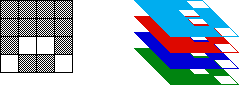
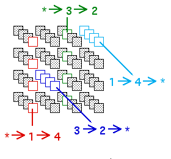

| We have seen a relationship between 1-step memory tables and 2-step memory
tables that guarantees both produce the same picture: each row of the 2-step table must be
an appropriately oriented copy of the 1-step table: |
|  |
| But is this necessary? This 1-step table generates the same picture as this
2-step table, yet the rows of the 2-step table are not identical. How
is this possible? |
|
| Notice that the 1-step table forbids 1 → 4 and
3 → 2. |
| As indicated in the picture below, the 2-step table forbids
* → 1 → 4 and
* → 3 → 2, and also
3 → 2 → * and
1 → 4 → *. |
| We have seen that forbidding * → 1 → 4
forbids the pair 1 → 4, and consequently
1 → 4 → * is automatically forbidden:
we get the same picture regardless of whether or not the boxes in
1 → 4 → * are checked. |
|  |
| (Does the analogous effect occur in 1-step memory? Forbidding
1 → 1, 2 → 1, 3 → 1,
and 4 → 1 gives a gasket. What happens if we also forbid
1 → 4? Try it with the software.) |
| By contrast, these two 2-step memory tables do generate pictures that cannot be produced
by 1-step memory tables. To see this, note from the supperimposed grids neither
contains an empty length 2 address square. Click each table to see the empty length 3 addresses. |
|
| Make some of your own 2-step memory IFS that cannot be
generated with 1-step memory. Try them with the
software. |